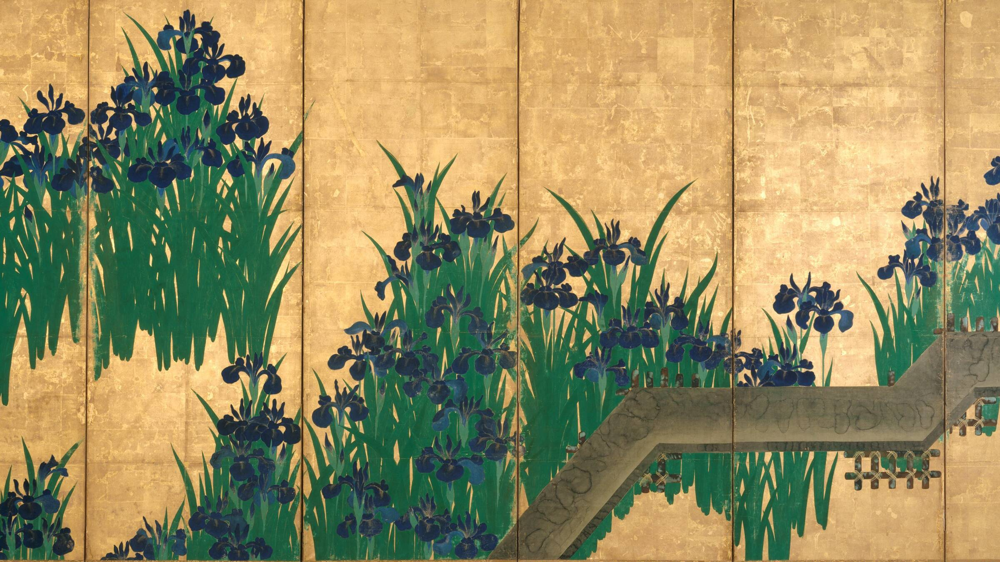

見つける。
知られていない仕事や店が、必要な人の目に届くように。
MORIKOSHA / DESIGN & DEVELOPMENT
さいたま市の小さな制作屋。会社やお店のホームページ、外国語のメニュー、まち歩きのアプリをつくります。
ホームページ制作 1ページ98,000円（税込）／2週間／デザイン5案

ABOUT MORIKOSHA
見つける、巡る、深く知る。その入口をつくります。
店や会社、宿、土地の歴史を、ホームページや地図、アプリにして、必要としている人へ届けます。
VISION
道や橋、川。長いあいだ、まちの骨組みを整える仕事に携わってきました。
国内や十の国のまちを歩くうちに、気になりはじめたことがあります。同じような道や建物があっても、まちの表情を決めているのは、その上で起きている出来事のほうだということ。人が店を見つけ、道に迷い、立ち止まり、その土地を少し好きになる。
骨組みは、もう多くのまちに揃っています。足りないのは、その上で人とまちが出会うための、目に見えにくい仕組みです。杜工舎は、情報と体験という、もうひとつのインフラをつくります。
HOMEPAGE / 主な仕事
THREE AXES / 3つの軸
知られていない仕事や店が、必要な人の目に届くように。
宿の玄関から路地や川べりへ、一歩踏み出すきっかけを。
古地図や土地の記録を、いまの風景に重ねて。
WHAT WE MAKE / 杜工舎でできること
表示はすべて税込です。
LET’S CONNECT
施設やお店のこと、届けたい魅力からお聞かせください。
制作について相談する特定電子メールの送信の適正化等に関する法律 第4条に基づき、送信者の情報を表示しています。
当方からの営業メールの受信を希望されない場合は、お送りしたメールにそのままご返信いただくか、上記メールアドレス宛に「配信停止」とお送りください。以後の送信を停止いたします。
お問い合わせやご依頼の際にいただいた個人情報は、ご連絡・お見積り・ホームページ制作の目的にのみ使用します。ご本人の同意なく第三者に提供することはありません。
当方は、インターネット上で公開されている事業者さまの連絡先情報（会社名・住所・メールアドレス等）を、サービスのご案内をお送りする目的で取得・利用することがあります。ご案内が不要とのご連絡をいただいた場合は以後お送りせず、そのご連絡先は「送信停止の管理」の目的に限って保管いたします。
制作の過程でお預かりした写真・原稿・会社情報は、納品後も他の用途に使用しません。施工実績を制作事例として紹介する場合は、事前にご承諾をいただいたうえで紹介します。
いただいた情報の開示・訂正・削除をご希望の場合は、上記のメールアドレスまでご連絡ください。
当サイトはアクセス解析ツールおよびCookieを使用していません。